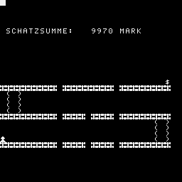

Gibt ?FC-ERROR wenn man aus dem Bild rennt.
$$$$$$$$$$$$$$$$$$$$$$$$$$$$$$$
S C H A T Z H O E H L E (Sch87)
$$$$$$$$$$$$$$$$$$$$$$$$$$$$$$$$
DU SOLLST DEN ZAUBERSCHATZ
FINDEN! DAZU MUSST DU DURCH
DIE HOEHLE NACH OBEN DURCH DIE
BEIDEN LEITERN ! ABER ACHTUNG:
IN DER HOEHLE ENTSTEHEN AB UND
ZU LOECHER! STUERZE NICHT AB!
NUTZE DIE CURSORTASTEN
DU MUSST IMMER IN BEWEGUNG
SEIN, DENN NUR DIE ERSCHUET-
TERUNG DEINER SCHRITTE WIRKT
AUF DIE LOECHER! AUSSERDEM
SCHRUMPFT DER $CHATZ RAPIDED!
HAST DU DEN $CHATZ ERREICHT,
SO SCHUETZT ER DICH UND ER
BRINGT DICH AUF DEM KUER-
ZESTEN WEG ZURUECK!
VIEL GLUECK !
$$$$$$$$$$$$$$$$$$$$$$$$$$$$$$$$
10 CLS:PRINT
12 PRINT "$$$$$$$$$$$$$$$$$$$$$$$$$$$$$$$$"
14 PRINT "S C H A T Z H O E H L E (Sch87)"
16 PRINT "$$$$$$$$$$$$$$$$$$$$$$$$$$$$$$$$"
20 PRINT " DU SOLLST DEN ZAUBERSCHATZ"
30 PRINT " FINDEN! DAZU MUSST DU DURCH"
40 PRINT " DIE HOEHLE NACH OBEN DURCH DIE"
50 PRINT " BEIDEN LEITERN ! ABER ACHTUNG:"
60 PRINT " IN DER HOEHLE ENTSTEHEN AB UND"
70 PRINT " ZU LOECHER! STUERZE NICHT AB!"
80 PRINT " NUTZE DIE CURSORTASTEN "
100 PRINT " DU MUSST IMMER IN BEWEGUNG"
110 PRINT " SEIN, DENN NUR DIE ERSCHUET-"
120 PRINT " TERUNG DEINER SCHRITTE WIRKT"
130 PRINT " AUF DIE LOECHER! AUSSERDEM"
131 PRINT " SCHRUMPFT DER $CHATZ RAPIDED!"
132 PRINT " HAST DU DEN $CHATZ ERREICHT,"
134 PRINT " SO SCHUETZT ER DICH UND ER"
136 PRINT " BRINGT DICH AUF DEM KUER-"
138 PRINT " ZESTEN WEG ZURUECK!"
140 PRINT " VIEL GLUECK !":PRINT
142 PRINT "$$$$$$$$$$$$$$$$$$$$$$$$$$$$$$$$"
145 GOTO 170
150 PRINT: PRINT " ANFAENG. ODER FORTG.?"
160 F$=INKEY$:IF F$=""THEN 160
162 RETURN
170 GOSUB 150:Z=10000:CLS
180 PRINT AT(5,1);"SCHATZSUMME:"
181 IF F$<>"F"THEN PRINT AT(5,21);"MARK":GOTO 190
182 PRINT AT(5,21);"DOLLAR"
190 A$="":B$=" ":C$=""
200 PRINT AT(20,C);A$:C=C+1
210 IF C=10 THEN C=C+1
220 IF C=15 THEN C=C+1
230 IF C=20 THEN C=C+1
240 IF C=30 THEN 260
250 GOTO 200
260 PRINT AT(25,L);A$
270 L=L+1
280 IF L=10 THEN L=L+1
290 IF L=15 THEN L=L+1
300 IF L=20 THEN L=L+1
310 PRINT AT(25,L);A$
320 IF L=29 THEN 340
330 GOTO 270
340 PRINT AT(15,M);A$
350 M=M+1
360 IF M=10 THEN M=M+1
370 IF M=20 THEN M=M+1
380 IF M=30 THEN PRINT AT(14,29);"$":GOTO 400
390 GOTO 340
400 Q=24:W=0
410 PRINT AT(Q,W);C$:L1=16
420 PRINT AT(L1,1);"( )":L1=L1+1
430 IF L1=20 THEN 450
440 GOTO 420
450 L2=21
460 PRINT AT(L2,27);"( )":L2=L2+1
470 IF L2=25 THEN 490
480 GOTO 460
490 D=INT(2*RND(1))+1:GOSUB 630:GOSUB 940:GOSUB 630
495 IF F$="F"THEN 500:ELSE A$=""
500 IF D=2 THEN G$=B$
510 IF D=1 THEN G$=A$
520 PRINT AT(15,10);G$
530 PRINT AT(15,20);G$
550 PRINT AT(20,10);G$
560 PRINT AT(20,15);G$
570 PRINT AT(20,20);G$
580 PRINT AT(25,10);G$
590 PRINT AT(25,15);G$
600 PRINT AT(25,20);G$:GOSUB 940:GOSUB 630:PAUSE 1
610 GOSUB 630
620 GOTO 490
630 R$=INKEY$:GOTO 2000:PRINT AT(5,15);Z:IF R$=""THEN 630:ELSE GOTO 640
632 IF Z=0 THEN PRINT AT(8,1);"VERSAGER! DEIN SCHATZ"
633 IF Z=0 THEN PRINT AT(10,1);"IST FLOETEN!":PAUSE 33:CLEAR:GOTO 170
640 R=ASC(R$):IF R=8 THEN 690
650 IF R=9 THEN 770
660 IF R=11 THEN 850
670 GOTO 630
680 RETURN
690 IF Q=14 AND W=28 THEN PRINT AT(7,9);"H U R R A !":GOTO 1350
700 IF Q=24 OR Q=19 THEN 730:IF W=0 THEN 680
710 IF Q=14 THEN 730
720 GOTO 680
730 PRINT AT(Q,W);B$:W=W-1
740 PRINT AT(Q,W);C$
750 GOSUB 940
760 GOTO 680
770 IF Q=14 AND W=28 THEN 690
780 IF Q=24 OR Q=19 THEN 810:IF W=20 THEN 680
790 IF Q=14 THEN 810
800 GOTO 680
810 PRINT AT(Q,W);B$:W=W+1
820 PRINT AT(Q,W);C$
830 GOSUB 940
840 GOTO 680
850 IF W=28 AND Q>19 THEN 900
860 IF W=2 THEN 880
870 GOTO 680
880 IF Q>14 AND Q<20 THEN 900
890 GOTO 680
900 PRINT AT(Q,W);B$:Q=Q-1
910 PRINT AT(Q,W);C$
920 GOSUB 940
930 GOTO 680
940 GOTO 960
950 RETURN
960 IF Q=14 THEN 980
970 GOTO 1010
980 IF W=10 THEN 1110
990 IF W=20 THEN 1110
1000 GOTO 950
1010 IF Q=19 THEN 1030
1020 GOTO 1060
1030 IF W=10 OR W=15 THEN 1190
1040 IF W=20 THEN 1190
1050 GOTO 950
1060 IF Q=24 THEN 1080
1070 GOTO 1100
1080 IF W=10 OR W=15 THEN 1260
1090 IF W=20 THEN 1260
1100 GOTO 950
1110 IF W=10 AND G$=B$ THEN 1150
1120 IF W=15 AND G$=B$ THEN 1150
1130 IF W=20 AND G$=B$ THEN 1150
1140 GOTO 950
1150 PRINT AT(Q,W);B$
1160 Q=Q+1:PRINT AT(Q,W);C$
1170 IF Q=19 THEN 950
1180 GOTO 1150
1190 IF W=10 AND G$=A$ THEN 950
1200 IF W=15 AND G$=A$ THEN 950
1210 IF W=20 AND G$=A$ THEN 950
1220 PRINT AT(Q,W);B$
1230 Q=Q+1:PRINT AT(Q,W);C$
1240 IF Q=24 THEN 950
1250 GOTO 1220
1260 IF W=10 AND G$=A$ THEN 950
1270 IF W=15 AND G$=A$ THEN 950
1280 IF W=20 AND G$=A$ THEN 950
1290 PRINT AT(Q,W);B$
1300 Q=Q+1:PRINT AT(Q,W);C$
1310 IF Q=30 THEN 1330
1320 GOTO 1290
1330 PRINT AT(Q,W);"TOT!":PAUSE 40
1340 GOTO 1620
1350 W1=15:PRINT AT(Q,W);C$:PAUSE 30
1360 PRINT AT(W1,27);"* *":PAUSE 1
1370 W1=W1+1:IF W1=25 THEN 1390
1380 GOTO 1360
1390 PRINT AT(15,10);A$:PRINT AT(15,20);A$:PRINT AT(15,15);A$
1400 FOR S=10 TO 20 STEP 5:PRINT AT(20,S);A$:NEXT
1410 FOR S=10 TO 30 STEP 5:PRINT AT(25,S);A$:NEXT
1420 PRINT AT(Q,W);C$:PAUSE 1
1430 PRINT AT(Q,W);B$
1440 IF W=28 THEN 1460
1450 W=W-1:GOTO 1420
1460!
1470 Q=Q+1
1480 PRINT AT(Q,W);C$:PAUSE 4
1490 PRINT AT(Q,W);B$
1500 IF Q=24 THEN 1520
1510 GOTO 1470
1520!
1530 W=W-1
1540 PRINT AT(Q,W);C$:PAUSE 1
1550 IF W=0 THEN WINDOW 0,31,0,31:GOTO 1580
1560 PRINT AT(Q,W);B$
1570 GOTO 1530
1580 PRINT AT(9,0);Z
1581 IF F$<>"F"THEN PRINT AT(9,7);"MARK HAST DU GERETTET!":GOTO 1583
1582 PRINT AT(9,7);"DOLLAR HAST DU GERETTET!"
1583 PAUSE 40
1610 CLEAR:GOTO 170
1620 WINDOW 0,31,0,31:CLS
1630 PRINT:PRINT
1640 PRINT " DU VERMODERST IN DER"
1645 PRINT:PRINT " H O E H L E !"
1648 PRINT:PRINT " DER SCHATZ IST NOCH DA!"
1649 PRINT:PRINT " WER WAGT, GEWINNT!!!"
1650 PAUSE 20:CLEAR:GOTO 170
2000 IF F$="F"THEN 2200
2010 Z=Z-1
2020 IF Z=0 THEN 632
2022 PRINT AT(5,15);Z
2023 IF R$=""THEN 630
2030 GOTO 640
2200 Z=Z-10
2202 PRINT AT(5,15);Z
2204 IF Z=0 THEN 632
2210 IF Z=0 THEN 632
2212 IF R$=""THEN 630
2220 GOTO 640